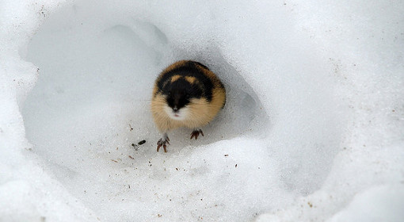
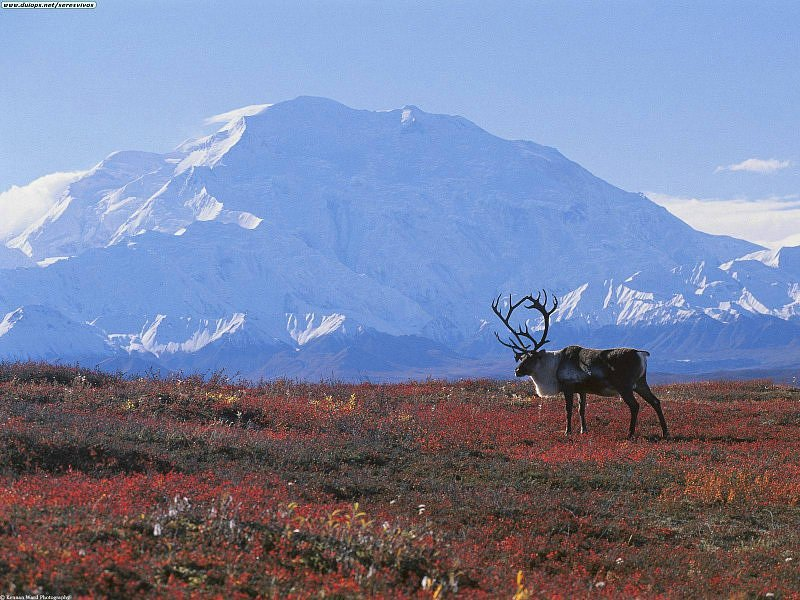

TUNDRAJest to biom znajduj¹cy siê w zimnym klimacie strefy arktycznej i subarktycznej. Charakteryzuje siê nisk¹ pokryw¹ roœlinn¹ (nie ma drzew), spowodowan¹ bardzo krótkim okresem wegetacyjnym i wieczn¹ zmarzlin¹. Klimat: krótkie i ch³odne lato podczas dnia polarnego (nie wiêcej ni¿ 15°C), d³uga i mroŸna zima podczas nocy polarnej (nawet do -48°C) Roœlinnoœæ: g³ównie mchy i porosty, ale te¿ trawy i krzewinki (np. borówki) Zwierzêta: lemingi, gronostaje, lisy polarne, pardwy, zaj¹ce bielaki, sus³y, renifery, pi¿mowo³y  |
 |